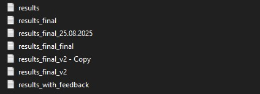
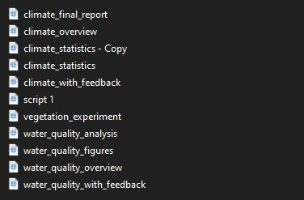
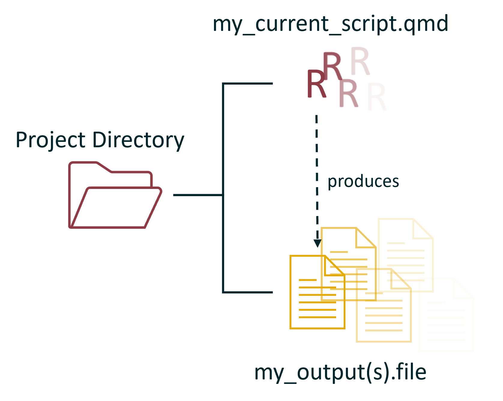
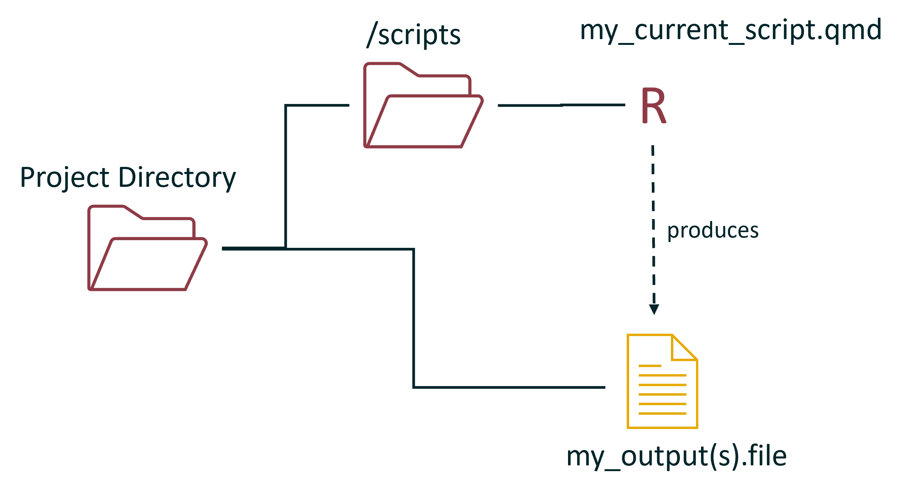
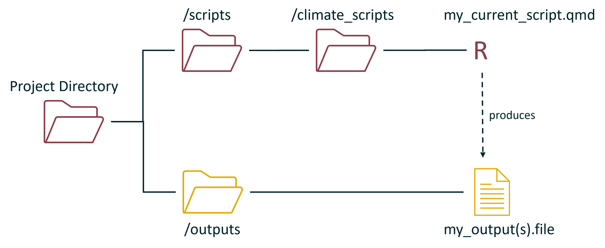
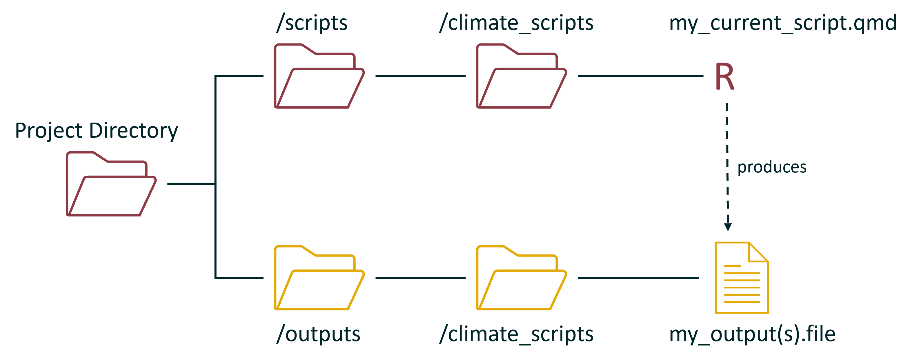
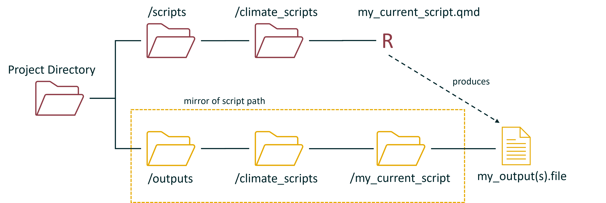

Got a bunch of scripts and are confused which output belongs to which script? Maybe you promised yourself your file organisation would be good this time? Never fear, this post is for you!
1 Introduction
Being organised is hard work, no doubt about it. Being consistent is hard work, no doubt about it. But automating your output folders to be both organised and consistent? Well that’s easy, and today I’ll be showing you how.
Lets set a scene that I’m sure many of you have encountered. You create a new repository for your next work task or personal project, initially you take your time, you’re careful, you organise everything neatly. But time goes on and competing priorities appear, suddenly you are in a rush, naming falls to the wayside and you just need to get things done. One day you look back at your work and you realise you have created a monster, your results folder probably looks something like this…

and your scripts folder a bit like this:

… its a sight to behold…
Note
I will give you $100 if you successfully match the output(s) to the script that produce it.
conceptually, you could represent the above arrangement like this:

With every script and every output all dumped into the project directory folder.
2 The Manual Fix
Not to worry, to keep things organised you put your scripts into a scripts folder. Maybe you have so many scripts that you also create sub folders!:

Variation 1
Variation 2
however, in both these cases, the outputs are still getting dumped directly into the project directory. The natural next step here is to create a folder that stores all of the outputs:

Or, if you have sub folders it could look like this:

But that’s hard work! And as we covered above, overtime the maintenance on these structures fall away and get forgotten.
3 The Automated Solution
Thankfully there is an easy fix, a little something called getting the active document context. Effectively what we are going to do is create a function that we can run at the start of every single script. This function will get information about the active document (i.e. the script being run), and use this to create a series of folders and paths that perfectly mirror the path to the script.
For example by running rstudioapi::getActiveDocumentContext() we return a bit of information about the path of the script, the id, and where the mouse is. We can use this to our advantage by changing the function to rstudioapi::getActiveDocumentContext()$path and just selecting the path. This will return something like this:
Following this, we can isolate the specific name of the script using a little bit of stringr() magic, which leaves us with the string “climate_final_report”. Next, we can inject this string into the dir.create() function and hey presto the function automatically creates a folder with the exact same name as the script, right next to our script. Then we can just save the path to this folder as an object that we can reference whenever we want to save one of our outputs.
The bones of this function are presented below:
Code
#create a function that makes an output folder and path that matches the script calling itauto_output <-function(){#load in the required librarieslibrary(rstudioapi)library(stringr)#get the file path and name of the active document script_path <-getActiveDocumentContext()$path#remove the unnecessary components of the file path output_path <-str_remove_all(script_path, ".*/|.qmd|.R")#create a folder at the locationdir.create(output_path)#save the location as an object to the global environmentassign("output_path", paste0(output_path, "/"), envir = .GlobalEnv)}
However, there are a two key issues with this set up so far:
This function only works when you manually run an R script or quarto document, it fails when you try to render a quarto document (bit too complicated to cover why here).
This function is currently assuming the output folder should be created in the same folder that the script is located - in our examples above this would only work in the very first conceptual diagram.
The first issue is a relatively simple fix, we just need to include the “quarto render” version of the rstudioapi::getActiveDocumentContext() function, which is knitr::current_input(). Below we update the function to first try rstudioapi::getActiveDocumentContext() , and if that fails, switch to knitr::current_input():
Code
#create a function that makes an output folder and path that matches the script calling itauto_output <-function(){#load in the required librarieslibrary(rstudioapi)library(stringr)#try the first method, if it fails "result" becomes an object of class "try-error" result <-try({#get the file path and name of the active document script_path <-getActiveDocumentContext()$path#remove the unnecessary components of the file path which is everything left of the last /, and the ".qmd" or ".R" output_path <-str_remove_all(script_path, ".*/|.qmd|.R") }, silent =TRUE)#if the result object became a class "try-error" then we attempt the second methodif (inherits(result, "try-error")){#get the file path and name of the active document script_path <- knitr::current_input()#remove unnecessary components of the file path output_path <-str_remove_all(script_path, ".rmarkdown") }#create a folder at the locationdir.create(output_path)#save the location as an object to the global environmentassign("output_path", paste0(output_path, "/"), envir = .GlobalEnv)}
However the second issue is a bit more abstract as it depends on your exact folder structure. As we covered above, your scripts might be stored in a “scripts/” folder, or maybe there are layers of sub folders.
The best solution I have found for this is to mirror the script folder organisation into a newly created “outputs” folder. This is achieved by modifying the function to use here(). What here() does is return a path to the R project directory that the script is being run within (i.e. the parent folder in our conceptual diagram). By combining the here() function with our custom function above we can isolate the exact path from the parent folder of the project to the script being run, and then mirro this to create the folder and path structure for our outputs folder. For example, if we use rstudioapi::getActiveDocumentContext() and the path to the script is:
we can first identify that the parent folder is the final phrase from the here() function, which in our case is “website”. Following this, we can then see that everything between “website” and the file type from the rstudioapi::getActiveDocumentContext() function must be the folder(s) in which the R script is stored and the name of the script. In our case this would be:
Conceptually this would look almost exactly the same as our previous diagram, except that we have created an additional folder with the same name as the script to provide clarity on the source of the output, and that all of highlighted folders were created automatically:

The code to achieve this is as follows:
Code
#create a function that makes an output folder and path that matches the script calling itauto_output <-function(){#load the required packageslibrary(rstudioapi)library(stringr)library(here)library(glue)#try the first method, if it fails "result" becomes an object of class "try-error" result <-try({#get the file path and name of the active document script_path <-getActiveDocumentContext()$path#get the name of the folder that the R project sits in. Regex is to grab everything after the last slash parent_folder_name <-str_extract(here(), "[^/]+$")#get everything after the parent folder, note this may be several sub folders. sub_folder_names <-str_extract(script_path, glue("(?<=/{parent_folder_name}/).*"))#replace the very first subfolder with "output" this will split any additional subfolders off down the output folder chain output_path <-str_replace(sub_folder_names, "^[^/]+", "output")#drop the ".qmd" or ".R" off the end output_path <-str_remove_all(output_path, ".qmd|.R") }, silent =TRUE)#if the result object became a class "try-error" then we attempt the second methodif (inherits(result, "try-error")){#get the file path and name of the active document script_path <-paste0(getwd(), "/", knitr::current_input())#get the name of the folder that the R project sits in. Regex is to grab everything after the last slash parent_folder_name <-str_extract(here(), "[^/]+$")#get everything after the parent folder, not this may be several sub folders. sub_folder_names <-str_extract(script_path, glue("(?<=/{parent_folder_name}/).*"))#replace the very first subfolder with "output" this will split any additional subfolders off down the output folder pathway output_path <-str_replace(sub_folder_names, "^[^/]+", "output")#remove unnecessary components of the file path output_path <-str_remove_all(sub_folder_names, ".rmarkdown") }#create a folder at the locationdir.create(here(output_path), recursive =TRUE)#save the location as an object to the global environmentassign("output_path", paste0(output_path, "/"), envir = .GlobalEnv)}
And thats it! You can save this function, call it at the start of any script you write, and it will automatically create the required output folders for you to store all of the awesome work you create. To access the path to the created folders all you need to do is call the “output_path” object.
4 When Is This Useful When Is it Not?
Broadly speaking, you will find this function useful when the repository you are working in is high traffic, and/or has a lot of scripts and outputs. If you have several scripts that produce outputs with similar names this is also a life save.
Conversely, this function is certainly overkill for a simple repository that only contains one or two scripts.
5 Extensions
There are a few natural extensions to this function that I have also implemented in my day to day. The most obvious of which is creating another mirrored folder structure for my input data to be stored. This is particularly helpful when the data is automatically downloaded and then stored for later retrieval.
To the contrary, if you manually access and store your data this extension might not work so well for you - since you would have to be manually creating the folders to store the data to begin with.
Thanks For Reading!
If you like the content, please consider donating to let me know. Also please stick around and have a read of several of my other posts. You'll find work on everything from simple data management and organisation skills, all the way to writting custom functions, tackling complex environmental problems, and my journey when learning new environmental data analyst skills.